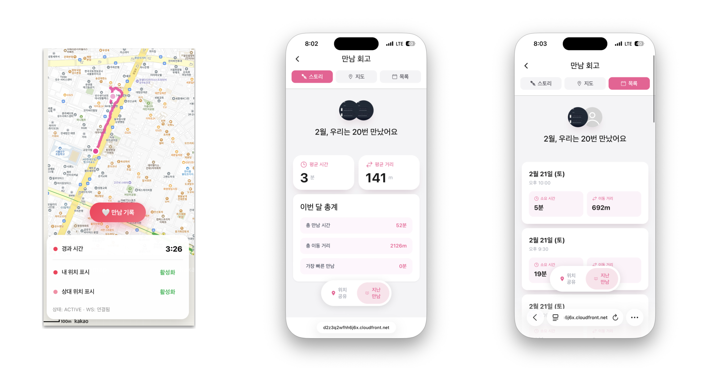

프로젝트 개요
오고있니는 커플이 만나러 가는 동안 경로를 실시간으로 공유할 수 있는 모바일 웹 서비스입니다. 단순 위치 추적이 아니라, 이동 과정과 만나는 순간 자체를 함께 경험하도록 서비스 흐름을 설계했습니다.
와플스튜디오 주최 해커톤 2026에서 개발했으며, 3위를 수상했습니다. 백엔드 세션 모델링과 실시간 흐름을 주로 담당했으며, 실시간 위치 업데이트·세션 기록·인증 접근이 안정적으로 동작하도록 구현했습니다.
담당 내용
- 세션 및 세션 포인트 이력을 포함한 세션 기반 위치 공유 DB 스키마를 설계했습니다.
- 실시간 세션 업데이트를 위한 백엔드/프론트엔드 WebSocket 흐름을 구현했습니다.
- WebSocket 핸드셰이크에 JWT 인증을 연결하고 세션 참여자 검증을 추가했습니다.
- HTTP 이력 로딩과 실시간 소켓 업데이트를 결합해 새로고침 후에도 지도가 상태를 복원하고 스트리밍을 이어가도록 구현했습니다.
- 세션 생성/수락 시 소켓 자동 시작과 세션 종료 흐름을 구현했습니다.
설계상 과제
핵심 과제는 소켓 연결 자체가 아니라 애플리케이션 수준의 세션 생명주기를 중심으로 실시간 위치 공유를 설계하는 것이었습니다. 이 서비스에서 WebSocket은 인증 기반 세션 입장, 이력 로딩, 실시간 좌표 스트리밍, 세션 종료를 포함한 더 큰 흐름의 일부였습니다.
과거 데이터는 HTTP로 불러오고 신규 업데이트는 WebSocket으로 흘려보내며, 새로고침/재연결 상황에서도 일관성을 유지하도록 흐름을 설계했습니다. 이를 통해 단순 실시간 소켓 데모가 아니라 세션 중심의 실시간 시스템에 가까운 백엔드를 구성했습니다.
미리보기

만남 중심 세션 추적과 실시간 경로 공유를 위한 모바일 우선 PWA 웹 앱 화면입니다.